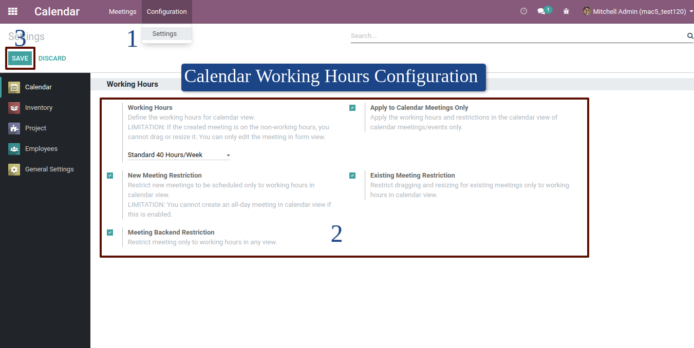
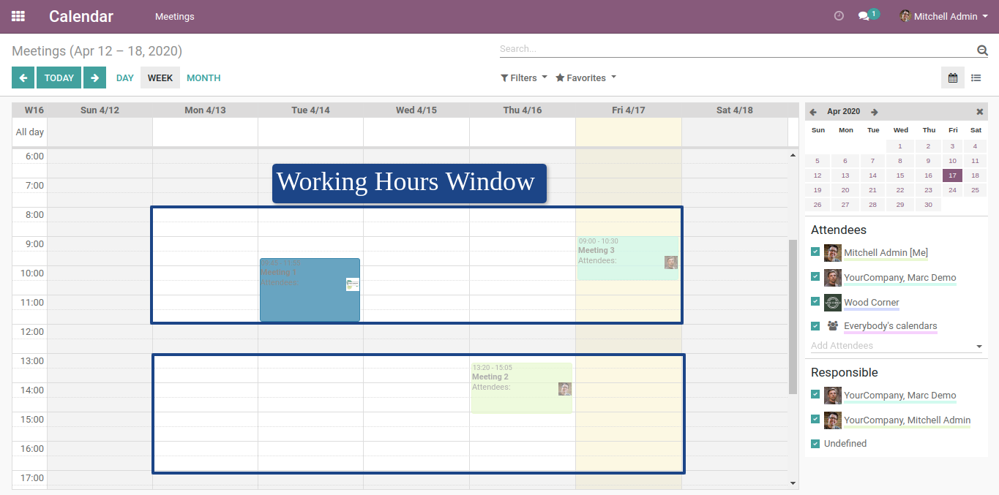

Calendar Working Hours
Way to configure working hours in calendar view

Go to Calendar > Configuration > Settings and set the desired working hours for calendar view. User must have Administration / Settings group access and must be in developer mode.
Sample calendar view
